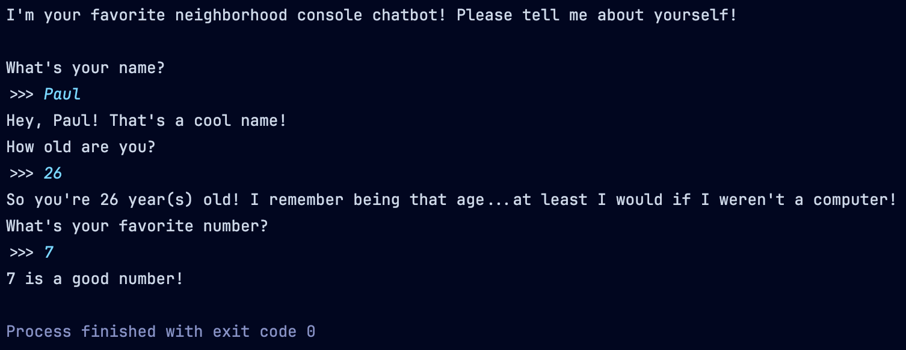
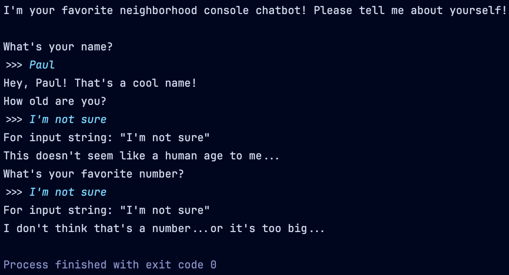
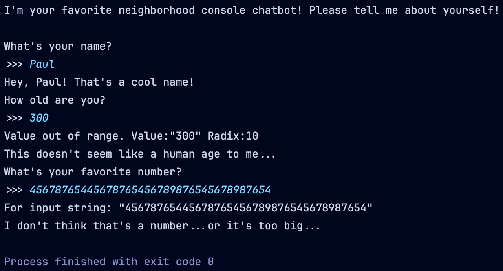
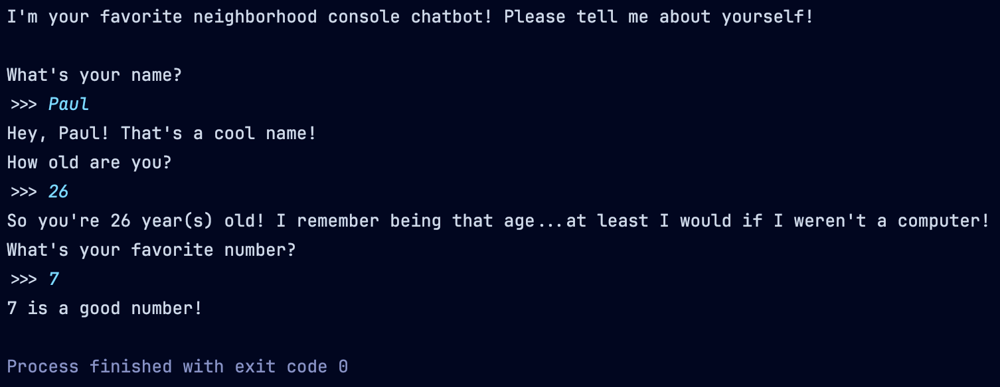
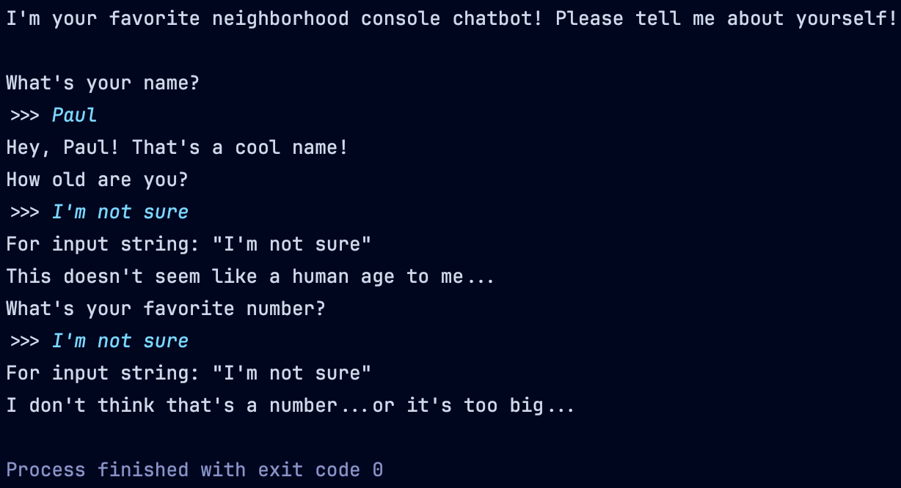
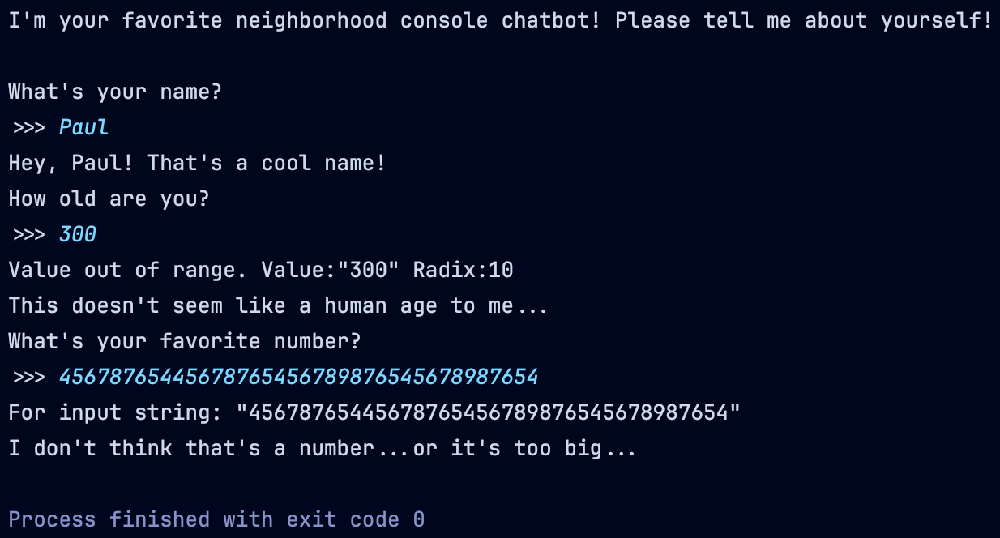

For this project, you’ll write a more robust chatbot that can handle bad or large input values! Your code should have the same output as the images below.
 Example good input
 Example bad input
 Example large input
For this project, you’ll write a more robust chatbot that can handle bad or large input values! Your code should have the same output as the images below.
 Example good input
 Example bad input
 Example large input

© 2026 Paul Ruziskey. All rights reserved.